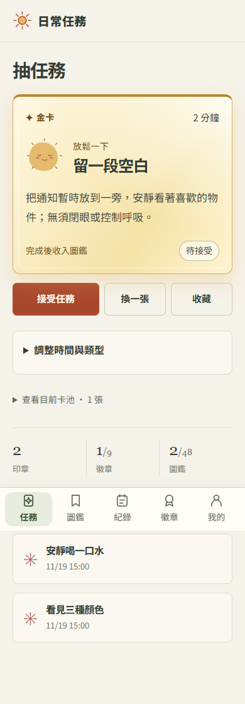
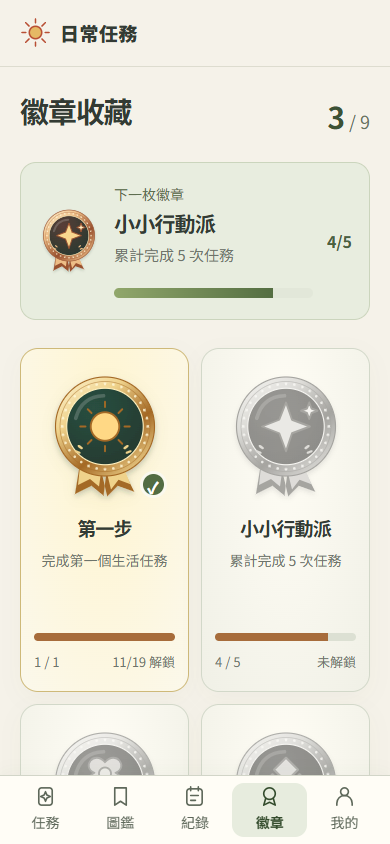

Android 8.0 以上 · v1.1.0
有幾分鐘，
就做點不一樣。
抽出藍、紫、金卡，完成任務收藏入冊。
下載 Android APK使用時需要連線到電腦服務
手機與電腦連上同一個 Wi-Fi，並保持電腦的日常任務程式開啟。

讓每次完成，都留下收藏。
48 張任務卡，藍卡 30 張、紫卡 12 張、金卡 6 張。完成後收入圖鑑，重複完成累計次數，再解鎖九枚不同的徽章。
已安裝 App？
更新電腦端程式並重新啟動即可使用；APK 1.1.0 不需重裝。

三步開始
- 1
啟動電腦服務
在專案資料夾雙擊
start-android.cmd，記下視窗顯示的網址。若你只有 APK，請向專案提供者取得可用的服務網址。 - 2
安裝 APK
手機下載後開啟檔案。若系統詢問，允許這次使用的瀏覽器或檔案管理員安裝，再安裝「日常任務」。
- 3
連線，開始抽卡
在 App 輸入電腦顯示的服務網址，註冊或登入，即可選時間抽卡。
下載與連線
按下載沒有開始？
請改用手機的 Chrome 或其他一般瀏覽器開啟此頁，或從 版本發布頁 的 Assets 下載 APK。版本發布頁也提供校驗碼。
App 顯示連線失敗？
確認電腦程式仍在執行，兩台裝置連到同一 Wi-Fi，且網址與連接埠正確。電腦可能需要允許 Python 的私人網路連線。手機不能使用 127.0.0.1 代替電腦的區網網址。
可以不開電腦嗎？
這個版本需要 Python 後端。若專案提供者另外架設持續運作的 HTTPS 服務，就可以使用該網址；目前這個下載頁沒有附帶雲端後端。
版本與驗證資訊
v1.1.0 · 最低 Android 8.0。已完成 APK 編譯與簽章驗證；Android 實機操作驗收仍待完成。預覽圖為手機尺寸瀏覽器畫面。
SHA-256
abf07ef80a9a3c058ab4855ae0ac7ea46338c6e40f633e6cb5ef236e2e8ce031